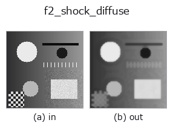

edges op• 数据种类:image → image
• 调用:fullseye.apply(img, "f2_shock_diffuse", a=0.5, b=0.5)(2-D 的模型是一张图 + 两个标量旋钮 a,b∈[0,1])

*图为在 128×128 合成输入上实际运行的输出。左为输入，右为输出。点云以俯视散点显示(亮度 = z)，一维序列为折线，体数据为沿 z 的最大值投影，视频为中间帧，复数图像为幅值；无法成像的返回值直接显示数值。*
扫描旋钮 a(0.1 / 0.5 / 0.9，另一旋钮取默认):
▸ f2_shock_diffuse: knob a sweep (docs site)
扫描旋钮 b(0.1 / 0.5 / 0.9，另一旋钮取默认):
▸ f2_shock_diffuse: knob b sweep (docs site)
换别的图像(合成场景 / 照片 / 硬币。上排为输入，下排为对应输出。旋钮取默认):
▸ f2_shock_diffuse: other inputs (docs site)
*第 4 列是彩色 (H,W,3) 输入。此算子能正确处理颜色而不跨通道(不把颜色通道当作第三个空间轴卷积)。*
正则化的冲击滤波 —— 先扩散再冲击，如此反复（Alvarez–Mazorra）。
> 以下的详细说明为原文 —— 摘要与标题已翻译。
`f2_shock` is the pure Osher-Rudin shock — *contraction only*. It takes the
sign of the Laplacian of the raw image, so every noise bump is a zero crossing
and becomes its own shock: on a blurred edge with sigma 0.02 noise it raises
the flat-area noise from 0.020 to 0.050 (2.5x) and pushes the edge step to
0.539 — past the true step of 0.500, which is the noise being promoted to
structure rather than the edge being recovered.
The remedy is to alternate the two flows: expand (a Gaussian diffusion)
and contract (the shock), taking both the sign *and* the dilation/erosion
from the smoothed copy, so the contraction can only act on structure the
diffusion left standing.
`a sets the number of diffuse/shock pairs (1..10); b` sets the diffusion
width sigma (0.4..2.0) and is the trade-off knob. Measured on that same
blurred noisy edge (input: step 0.112, flat noise 0.0201):
b = 0.00 (sigma 0.40) step 0.407 noise 0.0245 (x1.2)
b = 0.10 (sigma 0.56) step 0.272 noise 0.0091 (x0.45 - noise falls)
b = 0.25 (sigma 0.80) step 0.218 noise 0.0054
b = 0.50 (sigma 1.20) step 0.187 noise 0.0032
b = 1.00 (sigma 2.00) step 0.099 noise 0.0016
So `b` near 0 keeps most of the sharpening with almost none of the noise
amplification; from `b` about 0.1 upward the filter removes noise while
still more than doubling the input's edge step.
Applicability. (1) It sharpens what is already there — it cannot recover
detail the blur destroyed, and the step never reaches the true 0.500 here.
(2) Every iteration is a morphological max/min, so thin bright lines thicken
and thin dark lines are eaten; count the iterations you can afford.
(3) With `b` large the diffusion dominates and the result approaches a plain
Gaussian blur — check that the step is still above the input's.
• 示例数据目录(下载 URL / 许可证) —— 2-D 用 skimage.data(BSD/公有领域)加合成图,3-D 给出真实数据源(Stanford/PDS 等)的下载 URL。
• 算子来历与参考文献 —— 该算子族所依据的研究/方法出处。
• 算法的正典(作者・年份)与用途见上面的族使用指南。
下面的程序已确认可以运行(与图相同的输入)。在 Studio 帮助中，此块会变成按钮，可当场加载并运行。
f2_shock_diffuse 0.40 0.50
▸ Load this pipeline · Load & run
• gallery2d_edges — py -3.11 examples/gallery2d_edges.py
image 作为输入)identity · gaussian · mean_box · bilateral · unsharp · median · min_filter · max_filter
edges)sobel_mag · prewitt_mag · roberts_mag · dog · grad_dir · log · corner_response · sk_scharr
*Provenance: ops.py — 2D 算子登记表。本条目由 tools/opdocs.py md 自动生成(请勿手工编辑)。*
© 2026 Kazufumi Furuse — Fullseye operator documentation. Licensed under Apache-2.0.
{kind=link}
{kind=link}
{kind=link}